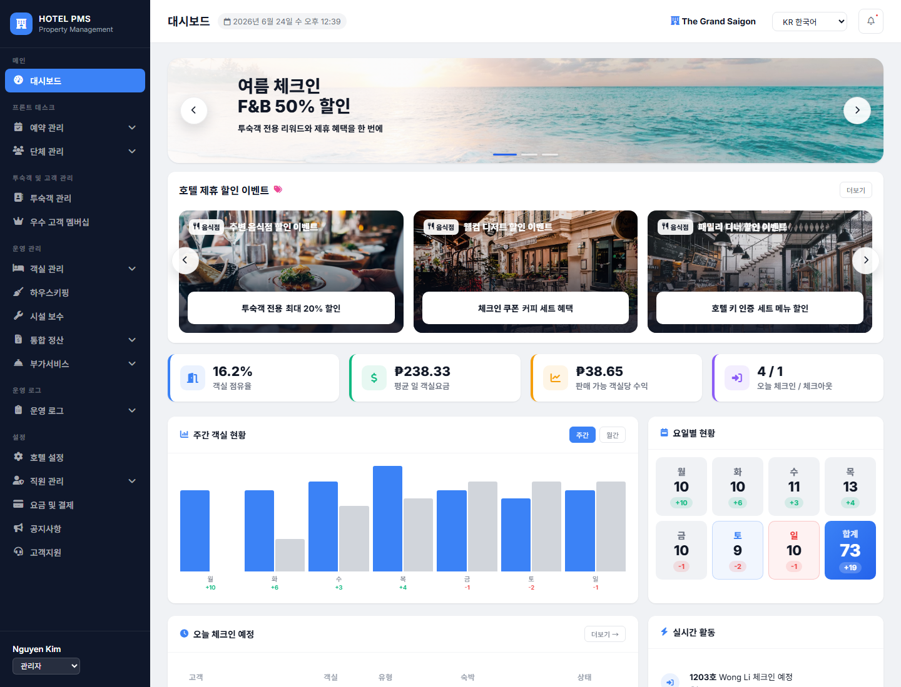

메인 화면은 호텔 운영의 현황판 역할을 합니다. 좌측 메뉴로 업무 영역을 이동하고, 중앙 대시보드에서 객실 지표, 예약/체크인 현황, 부가서비스 주문, 하우스키핑 상태를 한 번에 확인합니다.

화면 번호별 기능 설명
1
좌측 업무 메뉴
프론트데스크, 객실 운영, 하우스키핑, 시설보수, 통합 정산, 부가서비스 등 주요 업무 화면으로 이동하는 영역입니다.
- 현재 선택된 메뉴는 파란색으로 강조됩니다.
- 하위 메뉴가 있는 업무는 펼쳐서 세부 화면으로 이동합니다.
- 하단에는 로그인 사용자와 권한이 표시됩니다.
2
상단 상태 영역
현재 호텔, 언어, 알림, 기준 일시를 확인하는 영역입니다.
- 언어 선택으로 한국어/영어 화면을 전환합니다.
- 알림 버튼으로 미처리 업무나 시스템 안내를 확인합니다.
- 운영 기준 일시는 대시보드 수치의 기준이 됩니다.
3
핵심 KPI 카드
객실 점유율, 평균 객실 단가, 객실당 매출 등 당일 운영 지표를 요약합니다.
- OCC는 판매 가능 객실 대비 점유 객실 비율입니다.
- ADR은 판매 객실 기준 평균 객실 단가입니다.
- RevPAR는 전체 객실 기준 매출 효율을 확인하는 지표입니다.
4
예약/체크인 현황
오늘 체크인, 체크아웃, 투숙 중, 완료 상태를 빠르게 확인합니다.
- 프론트 직원은 미처리 체크인과 체크아웃을 우선 확인합니다.
- 상태 값은 예약 관리와 객실 운영 화면의 데이터와 연결됩니다.
- 시연 시 당일 업무량을 설명하기 좋은 영역입니다.
5
주간 객실 현황
요일별 객실 흐름을 그래프로 보여줍니다.
- 주간 추세를 통해 특정 요일의 객실 변동을 확인합니다.
- 월간 보기로 전환하면 더 긴 기간의 흐름을 볼 수 있습니다.
- 대시보드에서는 문제 진단보다 전체 추세 파악에 집중합니다.
6
부가서비스 매출
통합 POS, 골프장, 렌터카 등 객실 외 매출을 서비스 기준으로 요약합니다.
- 항목별 매출 비중을 한눈에 비교합니다.
- 세부 매출은 부가서비스 화면 또는 정산 화면에서 확인합니다.
- 객실 매출과 별도로 운영 부가 수익을 설명할 때 사용합니다.
7
오늘 부가서비스 주문
당일 발생한 부가서비스 주문의 시간, 객실, 서비스, 금액, 상태를 보여줍니다.
- 상태가 미완료인 주문은 제공 완료 또는 정산 반영 전 확인이 필요합니다.
- 더보기 버튼을 통해 관련 업무 화면으로 이동합니다.
- 프론트와 서비스 담당자가 당일 처리 누락을 확인하는 용도입니다.
8
하우스키핑/운영 상태
객실 청소 상태, 시설보수 요청, 운영 로그 등 후속 업무를 확인하는 영역입니다.
- 객실 청소 완료 여부는 체크인 가능성과 연결됩니다.
- 시설보수 요청은 담당자와 처리 일시를 기준으로 추적합니다.
- 운영 로그는 개인정보 조회나 정산 마감처럼 추적이 필요한 이력을 확인합니다.
검색 결과가 없습니다. 다른 키워드로 다시 검색해 주세요.
권장 확인 흐름
1. 상단 기준 확인호텔, 언어, 기준 일시가 맞는지 확인합니다.
2. KPI 확인객실 점유율과 매출 흐름을 먼저 봅니다.
3. 미처리 업무 확인체크인, 체크아웃, 주문, 청소 상태를 확인합니다.
4. 세부 화면 이동필요한 업무 화면으로 이동해 처리합니다.
대시보드는 “문제 해결 화면”이 아니라 “운영 추세와 당일 상태를 보는 첫 화면”입니다. 미수금, 마감 차액, 정산 검증처럼 판단이 필요한 항목은 통합 정산과 일일 마감 화면에서 상세 확인합니다.